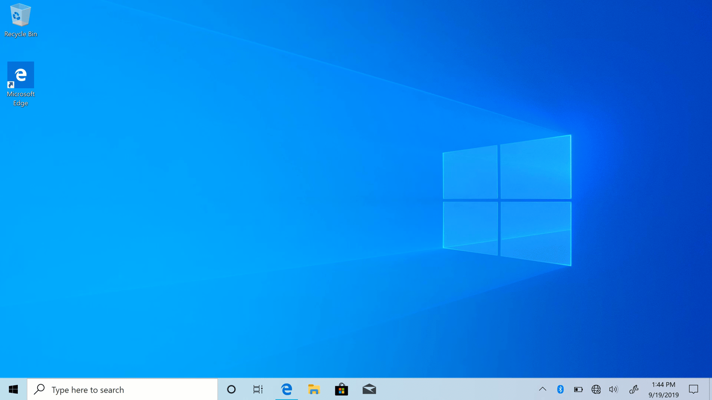
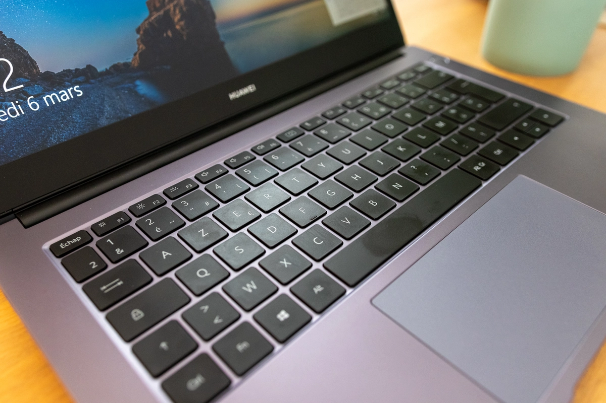
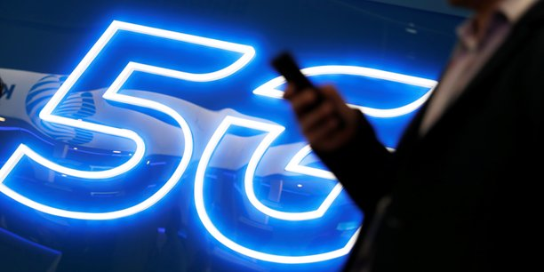

Windows 10 : la mise à jour 2004 (20H1) arrive

Microsoft a introduit avec Windows 10 (Creators Update) le Fluent Design, sa nouvelle mouvance esthétique. Celle-ci se définit notamment par des effets de transparence d’arrière-plan et de fluidité continu dans les applications.
Fluent Design devrait dès l’an prochain moderniser l’explorateur de Windows 10, comme en attestent les captures d’écran proposées ci-dessous. En effet, un designer, Michael West, s’est amusé à pondre des concepts de ce à quoi devrait selon lui, ressembler l’explorateur Windows suite à la mise à jour d’avril 2020


le MateBook D14 édition 2020 se pose d'emblée comme un auguste prétendant au titre de rapport qualité-prix de l'année.

À l'heure où l'écrasante majorité du marché capitalise sur Intel pour animer ses ordinateurs, Huawei profite de la remontada opérée ces derniers mois par AMD pour maintenir les coûts au plus faibles, tout en rognant peu sur la performance et l'autonomie.
- Ecran : 14 pouces, LCD IPS mat, définition 1920 x 1080 pixels, inclinable à 180°, taux d'occupation de 84%
- Processeur : AMD Ryzen 5 3500 U (4C/8T cadencés à 2,12 GHz, TDP 15 W) et iGPU Vega 8
- Mémoire vive : 8 Go DDR4
- Stockage interne : SSD M.2 512 Go
- Batterie : 56 Wh
- Webcam : caméra escamotable de 1 MP (720p)
- Dimensions : 215 x 322 x 15,9 mm pour 1,38 kg
- Réseau : Wi-Fi 802.11 a/b/g/n/ac, Bluetooth 5.0, Huawei Share
- Connectique : USB-C x1, USB 3,0 x2, HDMI x1, jack 3,5 mm x1
L'assistant de connexion PC Manager (le hub central de votre ordinateur Huawei, qui permet notamment de vérifier que les drivers sont à jour) fera le reste du travail

Huawei Share réplique à l'identique tous les mouvements que vous pouvez faire ensuite sur votre smartphone, et vous permet bien entendu de naviguer de l'un à l'autre sans anicroche. Copiez du contenu sur votre smartphone, et collez-le sur votre ordinateur. Envoyez des SMS directement depuis votre clavier, ou même glissez-déposez les fichiers que vous souhaitez transférer. Un gain de temps énorme, qui offre au couple D14-smartphone un réel avantage concurrentiel.
5G montrent une augmentation significative du débit de pointe: jusqu'à 8 flux simultanés à 20 Gbits / s de téléchargement et quatre flux simultanés de 10 Gbits / s de téléchargements.
La 5G permet une latence plus faible, l'utilisation de largeurs de bande de canaux plus larges, des vitesses plus élevées et une efficacité spectrale améliorée. De plus, le nouveau spectre 5G en dessous de 6 GHz et dans la gamme des ondes millimétriques facilite des améliorations significatives de capacité qui n'étaient pas possibles avec le spectre 4G seul. L'utilisation de ces larges bandes larges de nouvelles bandes de spectre pour la 5G fait partie des raisons pour lesquelles les essais 5G montrent une augmentation significative du débit de pointe: jusqu'à 8 flux simultanés à 20 Gbits / s de téléchargement et quatre flux simultanés de 10 Gbits / s de téléchargements.
La plate-forme d'apprentissage en ligne
de LinkedIn
LinkedIn Learning combine le contenu de Lynda.com : cours en ligne, cours, formation, didacticiels avec les données et le réseau professionnels de LinkedIn. LinkedIn compte désormais plus de 450 millions de profils de membres et a collecté des informations sur l'évolution des emplois, des industries, des organisations et des compétences au fil du temps. Les cours sont disponibles gratuitement avec un abonnement LinkedIn Premium pour les particuliers. Une version entreprise sera également bientôt disponible.
En général, il semblerait que les étudiants soient assez divisés en ce qui concerne l'expérience d'apprentissage sur LinkedIn Learning. Certains disent qu’ils ont apprécié les cours, d’autres - qu’ils ont été complètement déçus. Cependant, la majorité des utilisateurs conviennent qu'il existe certainement des domaines dans lesquels LinkedIn Learning pourrait faire un meilleur travail. Que ce soit le prix ou la variété des difficultés de cours - il y a toujours place à amélioration